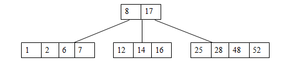

3.6 B-Trees
3.6.1 Definition of a B-tree
A B-tree of order m is an m-way tree (i.e., a tree where each node may have up to m children) in which:
- the number of keys in each non-leaf node is one less than the number of its children and these keys partition the keys in the children in the fashion of a search tree
- all leaves are on the same level
- all non-leaf nodes except the root have at least [m / 2] children
- the root is either a leaf node, or it has from two to m children
- a leaf node contains no more than m – 1 keys
The number m is preferably to be odd
3.6.2 B-Tree Example
3.6.3 Inserting into a B-Tree
Attempt to insert the new key into a leaf
If this would result in that leaf becoming too big, split the leaf into two, promoting the middle key to the leaf's parent
If this would result in the parent becoming too big, split the parent into two, promoting the middle key
This strategy might have to be repeated all the way to the top
If necessary, the root is split in two and the middle key is promoted to a new root, making the tree one level higher
3.6.4 Constructing a B-tree
Suppose we start with an empty B-tree and keys arrive in the following order:1 12 8 2 25 5 14 28 17 7 52 16 48 68 3 26 29 53 55 45
We want to construct a B-tree of order 5
The first four items go into the root:
To put the fifth item in the root would violate condition 5
Therefore, when 25 arrives, pick the middle key to make a new root
6, 14, 28 get added to the leaf nodes:
Adding 17 to the right leaf node would over-fill it, so we take the middle key, promote it (to the root) and split the leaf
7, 52, 16, 48 get added to the leaf nodes

Adding 68 causes us to split the right most leaf, promoting 48 to the root, and adding 3 causes us to split the left most leaf, promoting 3 to the root; 26, 29, 53, 55 then go into the leaves
Adding 45 causes a split of
and promoting 28 to the root then causes the root to split
Final B-Tree
3.6.5 Removal from a B-tree
During insertion, the key always goes into a leaf. For deletion we wish to remove from a leaf. There are three possible ways we can do this:
- If the key is already in a leaf node, and removing it doesn't cause that leaf node to have too few keys, then simply remove the key to be deleted.
- If the key is not in a leaf then it is guaranteed (by the nature of a B-tree) that its predecessor or successor will be in a leaf -- in this case we can delete the key and promote the predecessor or successor key to the non-leaf deleted key’s position.
If (1) or (2) lead to a leaf node containing less than the minimum number of keys then we have to look at the siblings immediately adjacent to the leaf in question:
- If one of them has more than the min. number of keys then we can promote one of its keys to the parent and take the parent key into our lacking leaf
- If neither of them has more than the min. number of keys than the lacking leaf and one of its neighbours can be combined with their shared parent (the opposite of promoting a key) and the new leaf will have the correct number of keys; if this step leave the parent with too few keys then we repeat the process up to the root itself, if required
Type #1: Simple leaf deletion
Type #2: Simple non-leaf deletion
Type #3: Enough siblings
Type #4: Too few keys in node and its siblings

3.6.6 Analysis of B-Trees
The maximum number of items in a B-tree of order m and height h:
root m - 1
level 1 m(m - 1)
level 2 m2(m - 1)
. . .
level h mh(m - 1)
So, the total number of items is
(1 + m + m2 + m3 + .. + mh)(m - 1) =
[(mh+1 - 1)/ (m - 1)] (m - 1) = mh+1 - 1
When m = 5 and h = 2 this gives 53-1 = 124
3.6.7 Reasons for using B-Trees
When searching tables held on disc, the cost of each disc transfer is high but doesn't depend much on the amount of data transferred, especially if consecutive items are transferred
- If we use a B-tree of order 101, say, we can transfer each node in one disc read operation
- A B-tree of order 101 and height 3 can hold 1014 - 1 items (approximately 100 million) and any item can be accessed with 3 disc reads (assuming we hold the root in memory)
If we take m = 3, we get a 2-3 tree, in which non-leaf nodes have two or three children (i.e., one or two keys)
- B-Trees are always balanced (since the leaves are all at the same level), so 2-3 trees make a good type of balanced tree
3.6.8 Comparing Trees
Binary trees
- Can become unbalanced and lose their good time complexity (big O)
- AVL trees are strict binary trees that overcome the balance problem
- Heaps remain balanced but only prioritise (not order) the keys
Multi-way trees
- B-Trees can be m-way, they can have any (odd) number of children
- One B-Tree, the 2-3 (or 3-way) B-Tree, approximates a permanently balanced binary tree, exchanging the AVL tree's balancing operations for insertion and (more complex) deletion operations